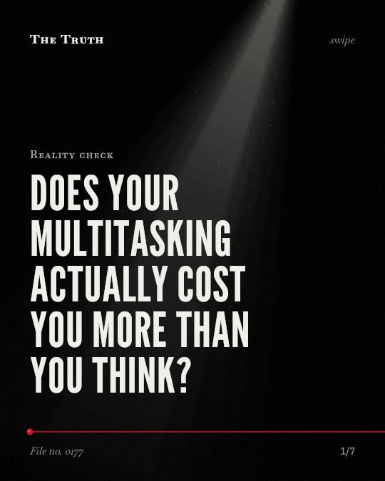
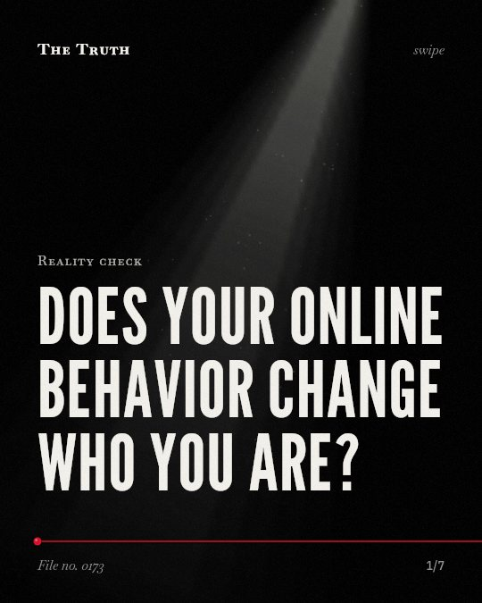
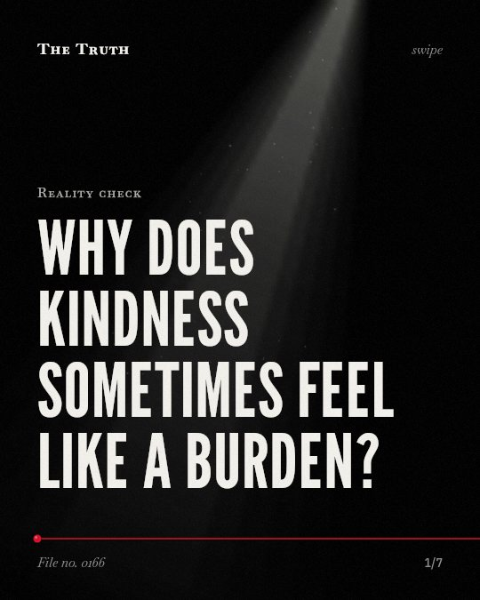
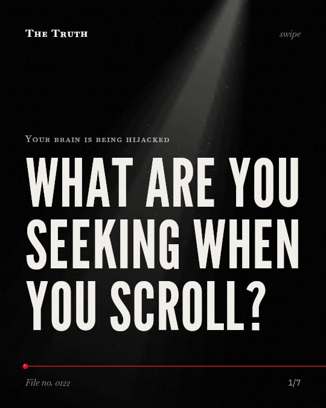
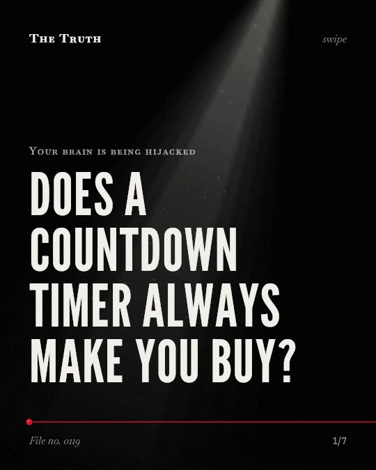
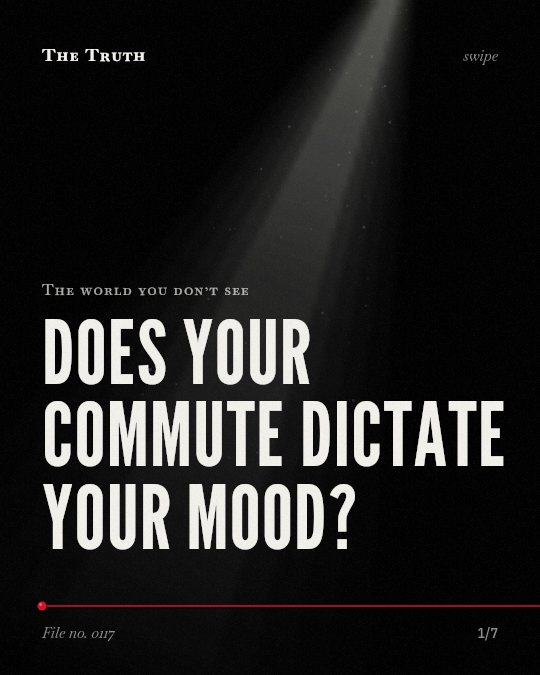
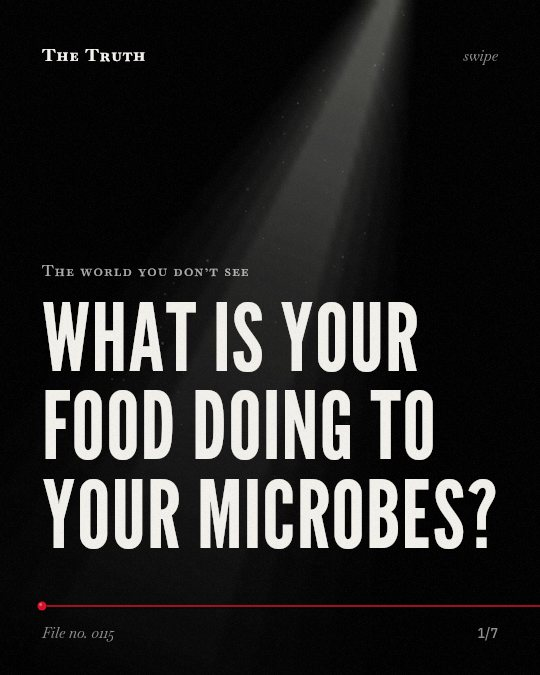

The library
208 files, newest first.
Psychology19Technology20The human brain19Social media19Modern society19Human relationships19Health and environment18Science and reality19Money and power18The future19History19
 Is the internet feeding on its own tail?
Is the internet feeding on its own tail? Does your gaming habit make you cold?
Does your gaming habit make you cold? Who profits from your digital experiences?
Who profits from your digital experiences? Is precision agriculture making our food more vulnerable?
Is precision agriculture making our food more vulnerable? Was public health a tool for control?
Was public health a tool for control? Does active posting make you more depressed?
Does active posting make you more depressed? Does watching eyes make you a better person?
Does watching eyes make you a better person? Does your brain have a setting for justice?
Does your brain have a setting for justice? What is your body paying for your professionalism?
What is your body paying for your professionalism? Where do your antibiotics go after you stop taking them?
Where do your antibiotics go after you stop taking them? Is your instinct actually a physical circuit?
Is your instinct actually a physical circuit? Is your medicine altering your internal biology?
Is your medicine altering your internal biology? Does online behavior change your brain?
Does online behavior change your brain? Are your secrets making you lonely?
Are your secrets making you lonely? Does your belief in hard work hide a deeper inequality?
Does your belief in hard work hide a deeper inequality? Can a machine actually be original?
Can a machine actually be original? Is your memory a recording or a reconstruction?
Is your memory a recording or a reconstruction? Is your software actually getting faster?
Is your software actually getting faster? What happens to the soil when the forest disappears?
What happens to the soil when the forest disappears? Does your self-worth depend on a notification?
Does your self-worth depend on a notification? Why does your fear of the future feel so heavy?
Why does your fear of the future feel so heavy? Does high-frequency trading stabilize the market?
Does high-frequency trading stabilize the market? Why can you not put the phone down?
Why can you not put the phone down? Is your schedule fighting your biology?
Is your schedule fighting your biology? Does your phone choose what you see first?
Does your phone choose what you see first? Does your home office protect your health?
Does your home office protect your health? Can your thoughts create a physical illness?
Can your thoughts create a physical illness? Does infinite scrolling actually damage your brain?
Does infinite scrolling actually damage your brain? Is empathy a tool for kindness or a weapon for control?
Is empathy a tool for kindness or a weapon for control? Does fixing corruption actually create equality?
Does fixing corruption actually create equality? Does your scrolling change how you vote?
Does your scrolling change how you vote?
Does your multitasking actually cost you more than you think? Is your loneliness causing a physical reaction in your brain?
Is your loneliness causing a physical reaction in your brain? Why do the least skilled feel the most capable?
Why do the least skilled feel the most capable? Does your meditation app actually fix your job?
Does your meditation app actually fix your job?
Does your online behavior change who you are? Does your language leave a genetic mark?
Does your language leave a genetic mark? You assume historical peace, but the evidence is limited.
You assume historical peace, but the evidence is limited. Is the machine learning logic or our flaws?
Is the machine learning logic or our flaws? Does your neighbor's wealth dictate your own morals?
Does your neighbor's wealth dictate your own morals? Can history be deleted?
Can history be deleted? Is your smart home making your brain smaller?
Is your smart home making your brain smaller?
Why does kindness sometimes feel like a burden? Can you find yourself in other people?
Can you find yourself in other people? Does your probiotic drink actually stay in your gut?
Does your probiotic drink actually stay in your gut? Do you choose your actions, or do they happen to you?
Do you choose your actions, or do they happen to you? Is your social capital actually disappearing?
Is your social capital actually disappearing? Is your healthy snack linked to mortality?
Is your healthy snack linked to mortality? Does your routine leave a physical mark on your brain?
Does your routine leave a physical mark on your brain? Can bacteria learn to survive every medicine?
Can bacteria learn to survive every medicine? Is your social media making you feel alone?
Is your social media making you feel alone? Does wealth always lead to dishonesty?
Does wealth always lead to dishonesty? Does wealth change your biology?
Does wealth change your biology? Is your job physically changing your brain?
Is your job physically changing your brain? Why do you choose pain over silence?
Why do you choose pain over silence? Is your personality being rewritten by an algorithm?
Is your personality being rewritten by an algorithm? Are you choosing your interests, or are they being curated for you?
Are you choosing your interests, or are they being curated for you? Is your deep focus actually a malfunction?
Is your deep focus actually a malfunction? Is remote work changing how you relate to others?
Is remote work changing how you relate to others? Do you choose your next move?
Do you choose your next move? When does your freedom feel like a burden?
When does your freedom feel like a burden? Can you trust the details of your past?
Can you trust the details of your past? Who is actually deciding if you are qualified?
Who is actually deciding if you are qualified? Did technology choose your life?
Did technology choose your life? Was that your choice, or their design?
Was that your choice, or their design? Does your phone make you blind to your surroundings?
Does your phone make you blind to your surroundings? Why do you trust the people you see?
Why do you trust the people you see? Who owns the data from your routine?
Who owns the data from your routine? Does switching tasks actually drain your brain?
Does switching tasks actually drain your brain? Is automation actually destroying the middle class?
Is automation actually destroying the middle class? Is your personality a biological byproduct?
Is your personality a biological byproduct? Is your phone revealing a hidden cognitive weakness?
Is your phone revealing a hidden cognitive weakness? Can you trust your own memories?
Can you trust your own memories? Does your phone actually make you feel closer?
Does your phone actually make you feel closer? Why do you believe what you see most often?
Why do you believe what you see most often? Does vitamin D actually protect your bones?
Does vitamin D actually protect your bones? What does your biology say about colonial borders?
What does your biology say about colonial borders? Who is directing your attention?
Who is directing your attention? Does your card make you spend more?
Does your card make you spend more? Is your biology out of sync with your life?
Is your biology out of sync with your life? Did war create the modern nation-state?
Did war create the modern nation-state? Do you need to be similar to be happy?
Do you need to be similar to be happy? Does the heat actually make you less smart?
Does the heat actually make you less smart? Are you really only using half of your brain?
Are you really only using half of your brain? Does Mozart actually make you smarter?
Does Mozart actually make you smarter? Are cities rewriting the rules of biology?
Are cities rewriting the rules of biology?
what are you seeking when you scroll? Is your diet rewriting your DNA?
Is your diet rewriting your DNA? Does capturing a moment erase it?
Does capturing a moment erase it?
Does a countdown timer always make you buy? Why does a correction not erase a lie?
Why does a correction not erase a lie?
Does your commute dictate your mood? Why does living near others make you feel alone?
Why does living near others make you feel alone?
What is your food doing to your microbes? Is your memory lying to you?
Is your memory lying to you? Who is more persuasive: you or a machine?
Who is more persuasive: you or a machine? Does social rejection feel like a physical wound?
Does social rejection feel like a physical wound? Why does your brain prioritize others?
Why does your brain prioritize others? Does shared trauma actually create a bond?
Does shared trauma actually create a bond? Does your best friend affect your romance?
Does your best friend affect your romance? Does sugar really make children hyperactive?
Does sugar really make children hyperactive? Who funded your heart health advice?
Who funded your heart health advice? Are you sober when you are tired?
Are you sober when you are tired? What happens when a species disappears forever?
What happens when a species disappears forever? Why do the poorest people play the most?
Why do the poorest people play the most? Does your child know why they want that snack?
Does your child know why they want that snack? Where do you go when your phone dies?
Where do you go when your phone dies? Why does a lie reach you before the truth?
Why does a lie reach you before the truth? What did you miss in the last hour?
What did you miss in the last hour? Are you actually learning the material?
Are you actually learning the material? Will you stay still or step in?
Will you stay still or step in? Is a classic psychiatry study a lie?
Is a classic psychiatry study a lie? Is your screen actually hurting your mind?
Is your screen actually hurting your mind? Who will you call tonight?
Who will you call tonight? Is your confidence a result of your environment?
Is your confidence a result of your environment? Does giving money actually cure depression?
Does giving money actually cure depression? Does stress always change your brain?
Does stress always change your brain? Why do you forget what you just searched?
Why do you forget what you just searched? Does the city sound hurt your heart?
Does the city sound hurt your heart? How much of the ocean floor have you actually seen?
How much of the ocean floor have you actually seen? Does more money actually make you happier?
Does more money actually make you happier? Is the air in your room affecting your choices?
Is the air in your room affecting your choices? Who is funding the science you read?
Who is funding the science you read? Is your head moving faster through time than your feet?
Is your head moving faster through time than your feet? Does your learning style actually help you learn?
Does your learning style actually help you learn? Does watching others make you feel less?
Does watching others make you feel less? Who are you spending your hours on?
Who are you spending your hours on? Can you tell who is real?
Can you tell who is real? Do you really choose what you buy?
Do you really choose what you buy? Does your brain stay clean while you sleep?
Does your brain stay clean while you sleep? Do you value the art or the artist's struggle?
Do you value the art or the artist's struggle? Did you evolve from a chimpanzee?
Did you evolve from a chimpanzee? How much of what you believe is actually true?
How much of what you believe is actually true? Does more money always mean more happiness?
Does more money always mean more happiness? Is your extra sleep actually a risk?
Is your extra sleep actually a risk? Does your phone affect you when it is silent?
Does your phone affect you when it is silent? Does outrage actually travel?
Does outrage actually travel? Is your childhood really your destiny?
Is your childhood really your destiny? Do you choose your actions or just witness them?
Do you choose your actions or just witness them? Does standing like a hero change your blood?
Does standing like a hero change your blood? Can ai read your scans better than a doctor?
Can ai read your scans better than a doctor? Is your health a result of your own choices?
Is your health a result of your own choices? Why did they ignore the cure?
Why did they ignore the cure? Who are you actually trusting with your future?
Who are you actually trusting with your future? Which jobs will AI actually touch?
Which jobs will AI actually touch? Does your screen create a distorted mirror?
Does your screen create a distorted mirror? Does your screen actually help you remember?
Does your screen actually help you remember? Who sets the price you are willing to pay?
Who sets the price you are willing to pay? What is circulating in your blood right now?
What is circulating in your blood right now? What is the cost of the extra hour?
What is the cost of the extra hour? Does a like feel like a reward?
Does a like feel like a reward? Does your phone drain your brain when you are not using it?
Does your phone drain your brain when you are not using it? You assume the universe is multiplying. The evidence shows it is stable.
You assume the universe is multiplying. The evidence shows it is stable. Is there a limit to how long you can live?
Is there a limit to how long you can live? Why do we choose people who are different?
Why do we choose people who are different? Why do you forgive people but punish machines?
Why do you forgive people but punish machines? You think the leftmost digit matters. The evidence is mixed.
You think the leftmost digit matters. The evidence is mixed. Does your appearance dictate your career path?
Does your appearance dictate your career path? What if the story of 38 witnesses is a lie?
What if the story of 38 witnesses is a lie? Can a game actually make you smarter?
Can a game actually make you smarter? Is your willpower actually your own?
Is your willpower actually your own? Does your screen provide connection or just a constant fear of being left out?
Does your screen provide connection or just a constant fear of being left out? Is sitting always the enemy of your health?
Is sitting always the enemy of your health? Who is setting your internal pace?
Who is setting your internal pace? Did you choose that option or did it choose you?
Did you choose that option or did it choose you? Is your phone making you less present?
Is your phone making you less present? Is dopamine about pleasure?
Is dopamine about pleasure? Who told the guards to be cruel?
Who told the guards to be cruel? Do violent video games change your behavior?
Do violent video games change your behavior? You think experts have the edge. The data says otherwise.
You think experts have the edge. The data says otherwise. Why does your neighbor's salary matter to you?
Why does your neighbor's salary matter to you? How much nature do you actually need?
How much nature do you actually need? What are you missing right now?
What are you missing right now? Can you tell the difference between news and an ad?
Can you tell the difference between news and an ad? Do trees really talk through fungi?
Do trees really talk through fungi? Does hearing a lie enough times make it true?
Does hearing a lie enough times make it true? How much of your behavior is a chemical reflex?
How much of your behavior is a chemical reflex? Why do you keep paying for things you don't use?
Why do you keep paying for things you don't use? Can a machine hear your thoughts before you speak?
Can a machine hear your thoughts before you speak? Is your behavior a choice or a reflex?
Is your behavior a choice or a reflex? Who decides if you get the job?
Who decides if you get the job? Does your phone ruin your conversations?
Does your phone ruin your conversations? Does the light in your home affect your weight?
Does the light in your home affect your weight? Is the air in your neighborhood aging your brain?
Is the air in your neighborhood aging your brain? Whose body are you measuring yourself against?
Whose body are you measuring yourself against? Does a screen change how a child sleeps?
Does a screen change how a child sleeps? Why do you trust a machine with your secrets?
Why do you trust a machine with your secrets? Are you mostly human?
Are you mostly human? Does lacking money change how you think?
Does lacking money change how you think? Why do you eat more without feeling full?
Why do you eat more without feeling full? Is your intelligence actually decreasing?
Is your intelligence actually decreasing? Does your lack of sleep change your personality?
Does your lack of sleep change your personality? Why are you talking to your screen instead of your coworkers?
Why are you talking to your screen instead of your coworkers? Who is actually making the choice?
Who is actually making the choice? Does your willpower actually run out?
Does your willpower actually run out? Why do you like the people next to you?
Why do you like the people next to you? Is your feed actually a cage?
Is your feed actually a cage? Would you still obey?
Would you still obey? Can you feel a bond in under an hour?
Can you feel a bond in under an hour? Can a machine see your dreams?
Can a machine see your dreams? Is your school schedule hurting your sleep?
Is your school schedule hurting your sleep? Does money actually make people less moral?
Does money actually make people less moral? Do you like things because you choose them?
Do you like things because you choose them? Do you really need 10,000 steps?
Do you really need 10,000 steps? Does quitting social media actually make you happier?
Does quitting social media actually make you happier? Are the insects really disappearing?
Are the insects really disappearing? Do blue-light glasses actually help you sleep?
Do blue-light glasses actually help you sleep? How fast do you judge a stranger?
How fast do you judge a stranger?No file matches that yet.